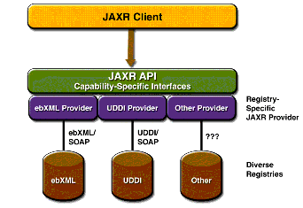

Overview of JAXR
This section provides a brief overview of JAXR. It covers the following topics:
What Is a Registry?
An XML registry is an infrastructure that enables the building, deployment, and discovery of web services. It is a neutral third party that facilitates dynamic and loosely coupled business-to-business (B2B) interactions. A registry is available to organizations as a shared resource, often in the form of a web-based service.
Currently there are a variety of specifications for XML registries. These include
- The ebXML Registry and Repository standard, which is sponsored by the Organization for the Advancement of Structured Information Standards (OASIS) and the United Nations Centre for the Facilitation of Procedures and Practices in Administration, Commerce and Transport (U.N./CEFACT)
- The Universal Description, Discovery, and Integration (UDDI) project, which is being developed by a vendor consortium
A registry provider is an implementation of a business registry that conforms to a specification for XML registries.
What Is JAXR?
JAXR enables Java software programmers to use a single, easy-to-use abstraction API to access a variety of XML registries. A unified JAXR information model describes content and metadata within XML registries.
JAXR gives developers the ability to write registry client programs that are portable across various target registries. JAXR also enables value-added capabilities beyond those of the underlying registries.
The current version of the JAXR specification includes detailed bindings between the JAXR information model and both the ebXML Registry and the UDDI version 2 specifications. You can find the latest version of the specification at
At this release of the J2EE platform, JAXR implements the level 0 capability profile defined by the JAXR specification. This level allows access to both UDDI and ebXML registries at a basic level. At this release, JAXR supports access only to UDDI version 2 registries.
Currently several public UDDI version 2 registries exist.
Service Registry, an ebXML registry and repositry with a JAXR provider, is available as part of the Sun Java Enterprise System.
JAXR Architecture
The high-level architecture of JAXR consists of the following parts:
- A JAXR client: This is a client program that uses the JAXR API to access a business registry via a JAXR provider.
- A JAXR provider: This is an implementation of the JAXR API that provides access to a specific registry provider or to a class of registry providers that are based on a common specification.
A JAXR provider implements two main packages:
javax.xml.registry, which consists of the API interfaces and classes that define the registry access interface.javax.xml.registry.infomodel, which consists of interfaces that define the information model for JAXR. These interfaces define the types of objects that reside in a registry and how they relate to each other. The basic interface in this package is theRegistryObjectinterface. Its subinterfaces includeOrganization,Service, andServiceBinding.The most basic interfaces in the
javax.xml.registrypackage are
Connection. TheConnectioninterface represents a client session with a registry provider. The client must create a connection with the JAXR provider in order to use a registry.RegistryService. The client obtains aRegistryServiceobject from its connection. TheRegistryServiceobject in turn enables the client to obtain the interfaces it uses to access the registry.The primary interfaces, also part of the
javax.xml.registrypackage, are
BusinessQueryManager, which allows the client to search a registry for information in accordance with thejavax.xml.registry.infomodelinterfaces. An optional interface,DeclarativeQueryManager, allows the client to use SQL syntax for queries. (The implementation of JAXR in the Application Server does not implementDeclarativeQueryManager.)BusinessLifeCycleManager, which allows the client to modify the information in a registry by either saving it (updating it) or deleting it.When an error occurs, JAXR API methods throw a
JAXRExceptionor one of its subclasses.Many methods in the JAXR API use a
Collectionobject as an argument or a returned value. Using aCollectionobject allows operations on several registry objects at a time.Figure 10-1 illustrates the architecture of JAXR. In the Application Server, a JAXR client uses the capability level 0 interfaces of the JAXR API to access the JAXR provider. The JAXR provider in turn accesses a registry. The Application Server supplies a JAXR provider for UDDI registries.

All of the material in The J2EE(TM) 1.4 Tutorial is copyright-protected and may not be published in other works without express written permission from Sun Microsystems.